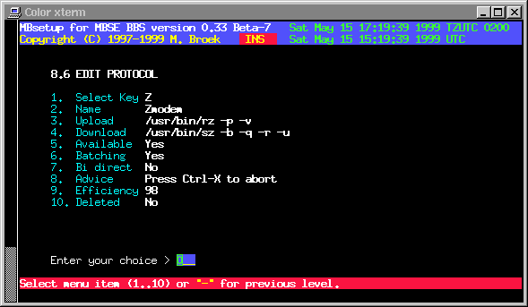

Last update 15-Jun-2002
MBSE BBS Setup - BBS Setup - Transfer Protocols.
Introduction.
It might look strange that you have to define transfer protocols for the bbs while for the mailer you don't need to do that. This is historic, ifcico already had internal protocols and the precessor of the bbs package had external protocols. Because my priority was make the bbs working it still is that way. When time comes I will build some of the protocols internal, adding external protocols will allways be possible.
When you configured the sources and build mbse, the configure script searched for excisting transfer protocols. When mbsetup was run the first time, when mbtask was started, the protocols found on your system are already configured with the right paths and enabled.
Transfer Protocols Setup.
Select Key The key the user has to press to select this protocol. Name The name of this protocol. Upload The full path and filename and parameters to upload files. Download The full path and filename and parameters to download files. Available If this protocol is available. Batching If this is a batching protocol. Bi direct If this is a bi-directional protocol (Not supported yet). Advice A small advice to the user shown before the transfer starts. Efficiency The efficiency in percent. Has no real meaning. Deleted If this protocol must be deleted. Sec. level The security level a user must have to select this protocol.

 Back to BBS index
Back to BBS index